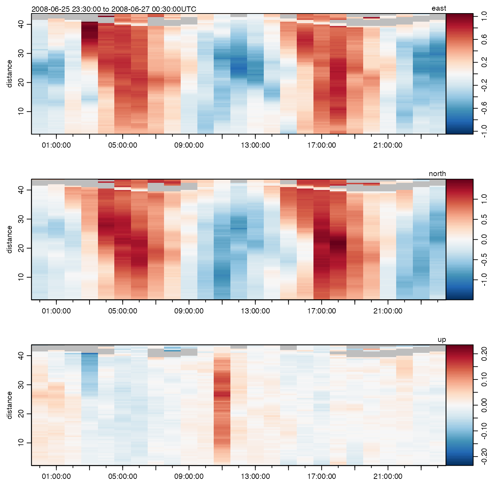

Create a summary plot of data measured by an acoustic doppler profiler.
# S4 method for adp plot( x, which, j, col, breaks, zlim, titles, lwd = par("lwd"), type = "l", ytype = c("profile", "distance"), drawTimeRange = getOption("oceDrawTimeRange"), useSmoothScatter, missingColor = "gray", mgp = getOption("oceMgp"), mar = c(mgp[1] + 1.5, mgp[1] + 1.5, 1.5, 1.5), mai.palette = rep(0, 4), tformat, marginsAsImage = FALSE, cex = par("cex"), cex.axis = par("cex.axis"), cex.lab = par("cex.lab"), xlim, ylim, control, useLayout = FALSE, coastline = "coastlineWorld", span = 300, main = "", grid = FALSE, grid.col = "darkgray", grid.lty = "dotted", grid.lwd = 1, debug = getOption("oceDebug"), ... )
| x | an adp object. |
|---|---|
| which | list of desired plot types. These are graphed in panels
running down from the top of the page. If |
| j | optional string specifying a sub-class of |
| col | optional indication of color(s) to use. If not provided, the
default for images is |
| breaks | optional breaks for color scheme |
| zlim | a range to be used as the |
| titles | optional vector of character strings to be used as labels for
the plot panels. For images, these strings will be placed in the right hand
side of the top margin. For timeseries, these strings are ignored. If this
is provided, its length must equal that of |
| lwd | if the plot is of a time-series or scattergraph format with lines, this is used in the usual way; otherwise, e.g. for image formats, this is ignored. |
| type | if the plot is of a time-series or scattergraph format, this is
used in the usual way, e.g. |
| ytype | character string controlling the type of the y axis for images
(ignored for time series). If |
| drawTimeRange | boolean that applies to panels with time as the horizontal axis, indicating whether to draw the time range in the top-left margin of the plot. |
| useSmoothScatter | boolean that indicates whether to use
|
| missingColor | color used to indicate |
| mgp | A 3-element numerical vector used with |
| mar | A 4-element numerical vector used with |
| mai.palette | margins, in inches, to be added to those calculated for the palette; alter from the default only with caution |
| tformat | optional argument passed to |
| marginsAsImage | boolean, |
| cex | numeric character expansion factor for plot symbols; see |
| cex.axis, cex.lab | character expansion factors for axis numbers and axis names; see |
| xlim | optional 2-element list for |
| ylim | optional 2-element list for |
| control | optional list of parameters that may be used for different
plot types. Possibilities are |
| useLayout | set to |
| coastline | a |
| span | approximate span of map in km |
| main | main title for plot, used just on the top panel, if there are several panels. |
| grid | if |
| grid.col | color of grid |
| grid.lty | line type of grid |
| grid.lwd | line width of grid |
| debug | an integer specifying whether debugging information is
to be printed during the processing. This is a general parameter that
is used by many |
| ... | optional arguments passed to plotting functions. For example,
supplying |
A list is silently returned, containing xat and yat,
values that can be used by oce.grid() to add a grid to the plot.
The plot may have one or more panels, with the content being controlled by
the which argument.
which=1:4 (or which="u1" to "u4") yield a
distance-time image plot of a velocity component. If x is in
beam coordinates (signalled by
metadata$oce.coordinate=="beam"), this will be the beam velocity,
labelled b[1] etc. If x is in xyz coordinates (sometimes
called frame coordinates, or ship coordinates), it will be the velocity
component to the right of the frame or ship (labelled u etc).
Finally, if x is in "enu" coordinates, the image will show the
the eastward component (labelled east). If x is in
"other" coordinates, it will be component corresponding to east,
after rotation (labelled u\'). Note that the coordinate is set by
read.adp(), or by beamToXyzAdp(),
xyzToEnuAdp(), or enuToOtherAdp().
which=5:8 (or which="a1" to "a4") yield
distance-time images of backscatter intensity of the respective beams. (For
data derived from Teledyne-RDI instruments, this is the item called ``echo
intensity.'')
which=9:12 (or which="q1" to "q4") yield
distance-time images of signal quality for the respective beams. (For RDI
data derived from instruments, this is the item called ``correlation
magnitude.'')
which=60 or which="map" draw a map of location(s).
which=70:73 (or which="g1" to "g4") yield
distance-time images of percent-good for the respective beams. (For data
derived from Teledyne-RDI instruments, which are the only instruments that
yield this item, it is called ``percent good.'')
which=80:83 (or which="vv", which="va",
which="vq", and which="vg") yield distance-time
images of the vertical beam fields for a 5 beam "SentinelV" ADCP
from Teledyne RDI.
which="vertical" yields a two panel distance-time
image of vertical beam velocity and amplitude.
which=13 (or which="salinity") yields a time-series plot
of salinity.
which=14 (or which="temperature") yields a time-series
plot of temperature.
which=15 (or which="pressure") yields a time-series plot
of pressure.
which=16 (or which="heading") yields a time-series plot
of instrument heading.
which=17 (or which="pitch") yields a time-series plot of
instrument pitch.
which=18 (or which="roll") yields a time-series plot of
instrument roll.
which=19 yields a time-series plot of distance-averaged
velocity for beam 1, rightward velocity, eastward velocity, or
rotated-eastward velocity, depending on the coordinate system.
which=20 yields a time-series of distance-averaged velocity for
beam 2, foreward velocity, northward velocity, or rotated-northward
velocity, depending on the coordinate system.
which=21 yields a time-series of distance-averaged velocity for
beam 3, up-frame velocity, upward velocity, or rotated-upward velocity,
depending on the coordinate system.
which=22 yields a time-series of distance-averaged velocity for
beam 4, for beam coordinates, or velocity estimate, for other
coordinates. (This is ignored for 3-beam data.)
which="progressiveVector" (or which=23) yields a progressive-vector diagram in the horizontal
plane, plotted with asp=1. Normally, the depth-averaged velocity
components are used, but if the control list contains an item named
bin, then the depth bin will be used (with an error resulting if the
bin is out of range).
which=24 yields a time-averaged profile of the first component
of velocity (see which=19 for the meaning of the component, in
various coordinate systems).
which=25 as for 24, but the second component.
which=26 as for 24, but the third component.
which=27 as for 24, but the fourth component (if that makes
sense, for the given instrument).
which=28 or "uv" yields velocity plot in the horizontal
plane, i.e. u[2] versus u[1]. If the number of data points is small, a
scattergraph is used, but if it is large, smoothScatter() is
used.
which=29 or "uv+ellipse" as the "uv" case, but
with an added indication of the tidal ellipse, calculated from the eigen
vectors of the covariance matrix.
which=30 or "uv+ellipse+arrow" as the
"uv+ellipse" case, but with an added arrow indicating the mean
current.
which=40 or "bottomRange" for average bottom range from
all beams of the instrument.
which=41 to 44 (or "bottomRange1" to
"bottomRange4") for bottom range from beams 1 to 4.
which=50 or "bottomVelocity" for average bottom velocity
from all beams of the instrument.
which=51 to 54 (or "bottomVelocity1" to
"bottomVelocity4") for bottom velocity from beams 1 to 4.
which=55 (or "heaving") for time-integrated,
depth-averaged, vertical velocity, i.e. a time series of heaving.
which=100 (or "soundSpeed") for a time series of sound speed.
In addition to the above, the following shortcuts are defined:
which="velocity" equivalent to which=1:3 or 1:4
(depending on the device) for velocity components.
which="amplitude" equivalent to which=5:7
or 5:8 (depending on the device) for backscatter intensity
components.
which="quality" equivalent to which=9:11 or 9:12
(depending on the device) for quality components.
which="hydrography" equivalent to which=14:15
for temperature and pressure.
which="angles" equivalent to which=16:18 for
heading, pitch and roll.
The color scheme for image plots (which in 1:12) is provided by the
col argument, which is passed to image() to do the actual
plotting. See “Examples” for some comparisons.
A common quick-look plot to assess mooring movement is to use
which=15:18 (pressure being included to signal the tide, and tidal
currents may dislodge a mooring or cause it to settle).
By default, plot,adp-method uses a zlim value for the
image() that is constructed to contain all the data, but to be
symmetric about zero. This is done on a per-panel basis, and the scale is
plotted at the top-right corner, along with the name of the variable being
plotted. You may also supply zlim as one of the ... arguments,
but be aware that a reasonable limit on horizontal velocity components is
unlikely to be of much use for the vertical component.
A good first step in the analysis of measurements made from a moored device
(stored in d, say) is to do plot(d, which=14:18). This shows
time series of water properties and sensor orientation, which is helpful in
deciding which data to trim at the start and end of the deployment, because
they were measured on the dock or on the ship as it travelled to the mooring
site.
Other functions that plot oce data:
plot,adv-method,
plot,amsr-method,
plot,argo-method,
plot,bremen-method,
plot,cm-method,
plot,coastline-method,
plot,ctd-method,
plot,gps-method,
plot,ladp-method,
plot,landsat-method,
plot,lisst-method,
plot,lobo-method,
plot,met-method,
plot,odf-method,
plot,rsk-method,
plot,satellite-method,
plot,sealevel-method,
plot,section-method,
plot,tidem-method,
plot,topo-method,
plot,windrose-method,
plot,xbt-method,
plotProfile(),
plotScan(),
plotTS(),
tidem-class
Other things related to adp data:
[[,adp-method,
[[<-,adp-method,
ad2cpHeaderValue(),
adp-class,
adpEnsembleAverage(),
adp_rdi.000,
adp,
as.adp(),
beamName(),
beamToXyzAdpAD2CP(),
beamToXyzAdp(),
beamToXyzAdv(),
beamToXyz(),
beamUnspreadAdp(),
binmapAdp(),
enuToOtherAdp(),
enuToOther(),
handleFlags,adp-method,
is.ad2cp(),
read.adp.ad2cp(),
read.adp.nortek(),
read.adp.rdi(),
read.adp.sontek.serial(),
read.adp.sontek(),
read.adp(),
read.aquadoppHR(),
read.aquadoppProfiler(),
read.aquadopp(),
rotateAboutZ(),
setFlags,adp-method,
subset,adp-method,
subtractBottomVelocity(),
summary,adp-method,
toEnuAdp(),
toEnu(),
velocityStatistics(),
xyzToEnuAdpAD2CP(),
xyzToEnuAdp(),
xyzToEnu()
